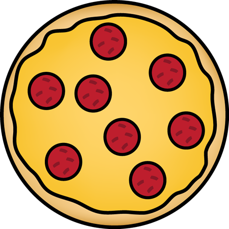
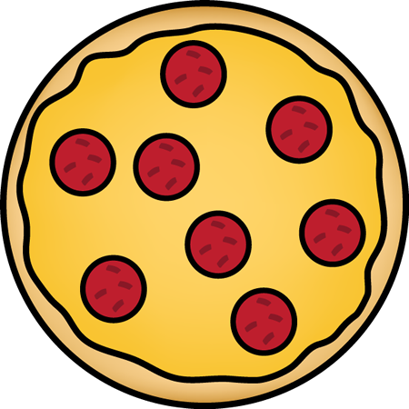

Prepare the pizza dough
Take a dough kneading plate and add all-purpose flour to it. Next, add salt and baking powder in it and sieve the flour once. Then, make a well in the centre and add 2 teaspoon of olive oil to it. On the other hand, take a little warm water and mix the yeast in it along with 1 teaspoon of sugar. Mix well and keep aside for 10-15 minutes. The yeast will rise in the meantime. Once the yeast has risen, add it to the flour knead the dough nicely using some water. Keep this dough aside for 4-6 hours. Then knead the dough once again. Now, the pizza dough is ready.

 
